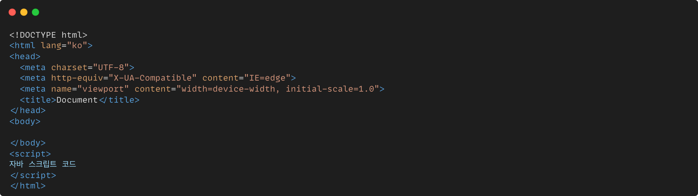
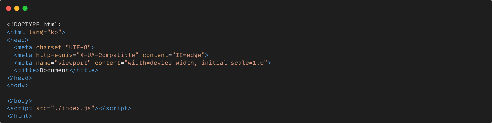

Javascript 자바스크립트
자바스크립트는 웹페이지에 생동감을 불어넣기 위해 만들어진 프로그래밍 언어입니다. 자바스크립트로 작성한 프로그램을 스크립트(script) 라고 부릅니다. 스크립트는 웹 페이지의 HTML 안에 작성할 수 있는데, 웹페이지를 불러올 때 스크립트가 자동으로 실행됩니다. 스크립트는 특별한 준비나 컴파일 없이 보통의 문자 형태로 작성할 수 있고, 실행도 할 수 있습니다.
JavaScript의 역사
자바스크립트는 1995년에 넷스케이프(Netscape)의 브렌던 아이크(Brendan Eich)에 의해 만들어졌습니다. 처음에는 모카(Mocha)라는 이름으로 개발되었으나, 그 후에 라이브스크립트(LiveScript), 최종적으로는 자바스크립트(JavaScript)라는 이름으로 변경 되었습니다.
JavaScript의 특징
1. 자바스크립트는 객체 기반의 스크립트 언어입니다.
2. 자바스크립트는 동적이며, 타입을 명시할 필요가 없는 인터프리터 언어입니다.
3. 자바스크립트는 객체 지향형 프로그래밍과 함수형 프로그래밍을 모두 표현할 수 있습니다.
JavaScrip의 장단점
장점
• 컴파일과정이 필요없다 > 빠른 시간 안에 스크립트 코드를 작성할 수 있다.
• 다른언어들에 비해 단순한 구조와 원칙을 갖고 있어 배우기 쉽다.
• 웹에 특화된 기술이기 때문에 운영체제나 플랫폼에 상관없이 잘 작동되고 확장성이 높다.
단점
• OS에 직접 접근할 수 없다.
• 다른 프로그램을 호출할 수 없다.
• 자바스크립트는 도메인이 동일한 두 탭/윈도우를 제외하고 탭/윈도우 간에 통신을 수행할 수 없다.
• 자바스크립트는 웹 브라우저에서 실행되기 때문에 일부 보안상의 제약이 있으며, 브라우저에서 웹 페이지를 열 때 안전하고 위험에 처하지 않도록 보장해야 한다.
• 일반적으로 자바스크립트는 자체 도메인에 대해서만 제한없이 네트워크 요청을 보낼 수 있다.
Javascript 사용방법
간단하게 Javascript의 사용방법을 알아봅시다.
1. 내부 스크립트
자바스크립트 코드는 <script>태그를 HTML문서안에 넣어서 사용 가능합니다.
HTML문서의 어느위치에서나 사용 가능한데 보통 HTML문서가 전부 로드 되고 나서인
<body> 아래에 사용합니다.
(주로 간단한 스크립트나 테스트용으로 사용합니다.)
아래는 내부 스크립트의 예시 코드입니다.

2. 외부 스크립트
자바스크립트 파일을 HTML과 별개인 .js 확장자의 파일로 저장한 후 불러올 수 있습니다. 외부 자바스크립트를 사용하려면 <script>의 src 속성으로 HTML 문서 위치의 기준 파일 경로를 입력해주면 됩니다. CSS의 링크(link) 방식과 유사합니다. 아래는 외부 스크립트의 예시 코드입니다.

Javascript를 이용하여 만든 웹사이트
대부분의 현대 웹사이트들은 JavaScript를 사용하여 동적이고 상호 작용적인 요소를 구현합니다. JavaScript는 클라이언트 측 웹 개발에서 강력한 역할을 하며, 웹페이지에 생동감과 사용자 경 험을 더하고자 하는 목적으로 주로 활용됩니다. 아래의 몇 가지 웹사이트를 통해 JavaScript의 활용 예시를 살펴볼 수 있습니다!